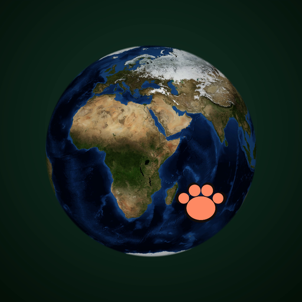

地球儀で見る絶滅危惧種生物図鑑
リアルな 3D 地球儀の上に、IUCN レッドリストで絶滅のおそれがあると評価された動物 1,063 種を生息地のピンとして配置。写真と解説を見て、Wikipedia と YouTube をアプリ内で開ける Android アプリ。
プライバシーポリシー / Privacy Policy
GitHub リポジトリ
データ・写真の出典(NOTICE)
写真のクレジット一覧